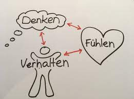

Psychologie |
| Startseite | Geschichte | Einflüsse aufs Leben | Fächer Grundlagen | Alltag/Wissenschaft | Psychologen | Einordnung |
Wie wird die Psychologie eingeordnet?WissenschaftDie Psychologie kann nicht vollständig den Natur-, Sozial- oder Geisteswissenschaften zugeordnet werden. Eine gängige Klassifikation unterteilt die Psychologie in
Verhaltenswissenschaften, Sammelbezeichnung für alle Disziplinen, die mit (natur-)wissenschaftlichen Methoden das Verhalten von Organismen einschließlich des Menschen untersuchen. Kognitionswissenschaft ist eine interdisziplinäre Wissenschaft, die sich mit der Verarbeitung von Information im Rahmen von Wahrnehmungs-, Denk- und Entscheidungsprozessen befasst, sowohl beim Menschen als auch bei Tieren oder Maschinen. Zu den Neurowissenschaften oder zur Neurobiologie werden die naturwissenschaftlichen Forschungsbereiche bezeichnet, in denen Aufbau und Funktionsweise von Nervensystemen untersucht werden Moderne PsychologieIn der modernen Psychologie bilden im weitesten Sinne allgemeine Anthropologie und Statistik einen gemeinsamen Nenner. Viele Bereiche der psychologischen Forschung folgen jedoch der
Die Medizinische Psychologie ist eine selbständige und anwendungsorientierte Teildisziplin der Klinischen Psychologie, die innerhalb der Humanmedizin agiert. Das Fachgebiet ist in der Lehre und Forschung sowie in der Patientenversorgung strukturell und inhaltlich als Institut, Abteilung und personell vertreten Eine Psychotherapie ist die Behandlung von psychischen Störungen, dazu zählen unter anderem Depressionen, Ängste, Essstörungen, Zwänge oder psychosomatische Erkrankungen. Nicht jeder darf eine Psychotherapie durchführen. In Deutschland ist die Berufsbezeichnung Psychotherapeut rechtlich geschützt. Pädagogische Psychologie oder Erziehungspsychologie ist ein Teilgebiet der Psychologie, das sich mit der Beschreibung und Erklärung der psychologischen Komponenten von Erziehungs-, Unterrichts- und Sozialisationsprozessen, einschließlich ihrer Formen und Situationen, befasst. Marketingpsychologie ist die Wissenschaft der erlebnis- und verhaltensmäßigen Reaktionen von Nachfragern auf Marketingmaßnahmen der Anbieter. Das beinhaltet beispielsweise Reaktionen auf die Gestaltung des Marketing Mix. Kommunikationsmaßnahmen. ist ein Teilgebiet der Arbeits- und Organisationspsychologie, das sich «auf die Betrachtung des Individuums in seinen Verhaltens-, Befindens-, Leistungs- und Entwicklungszusammenhängen als Mitarbeiter einer Organisation» beschäftigt Dennis Frenzel E-Mail: 210319@studierende.htl-donaustadt.at |

Abb.1: Wie Verhalten aussehen kann Abb.2: Ein Pädagoge als Beispiel anhand einer Lehrpersonen Abb.3: Marketingpsychologie um Geld zu verdienen |